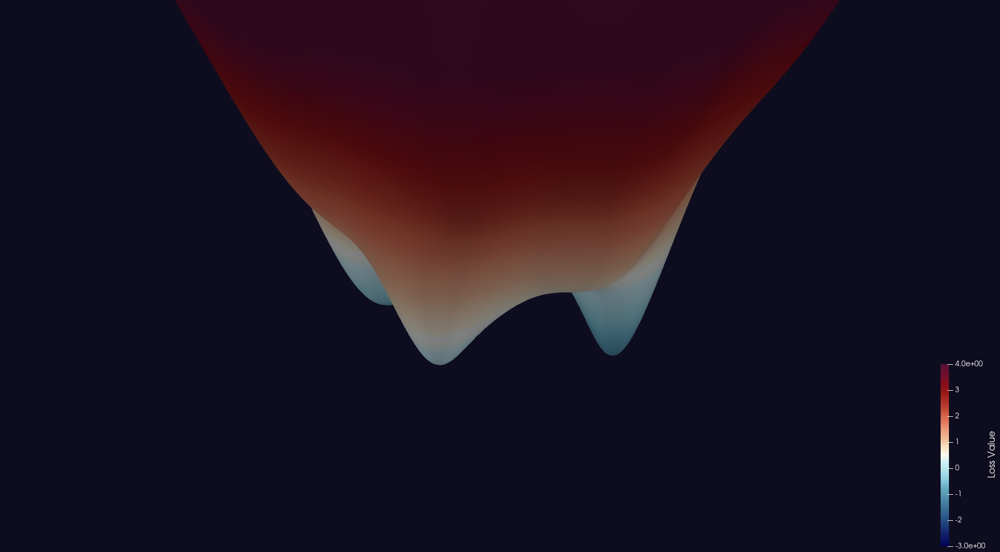
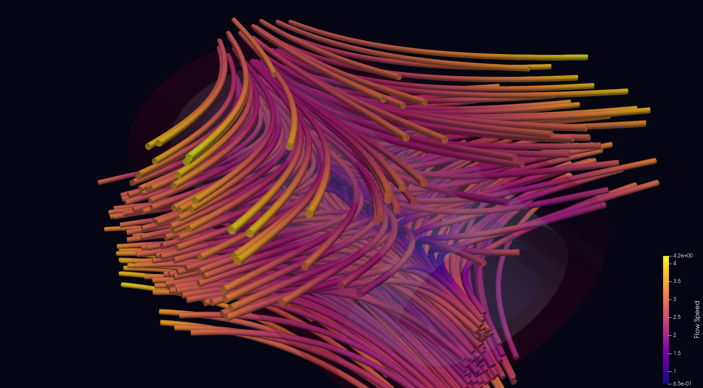
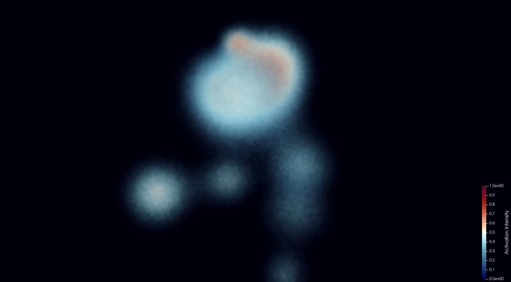
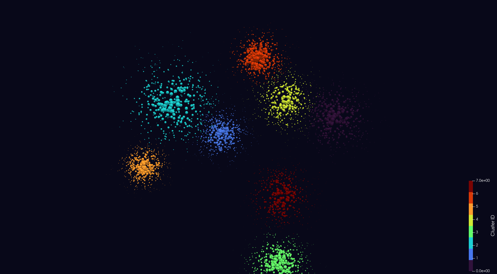

Scientific visualizations built with ParaView, demonstrating techniques for understanding deep learning models through 3D rendering, volume visualization, and vector field analysis.
Each visualization is generated programmatically using ParaView's Python API, from synthetic data through final rendered output.

3D surface plot of a multi-modal loss function with local minima, inspired by loss landscape visualization research (Li et al., 2018). Color-mapped by loss value and gradient magnitude.

Streamline visualization of optimizer trajectories through a 3D parameter space. Potential iso-surfaces show the energy landscape that guides gradient descent.

Volume rendering of synthetic 3D activation maps from a convolutional neural network layer. Custom opacity transfer function highlights high-activation regions.

3D point cloud visualization of neural network embeddings, styled as a t-SNE/UMAP projection. 8 distinct clusters with per-point confidence coloring via sphere glyphs.
NumPy-based synthetic datasets written to VTK XML formats (.vti, .vts, .vtp)
Programmatic pipelines using paraview.simple API — filters, color maps, camera control
High-resolution screenshots at 1920x1080 with custom lighting and backgrounds
StreamTracer, Contour, Glyph, Volume Rendering, Transfer Functions